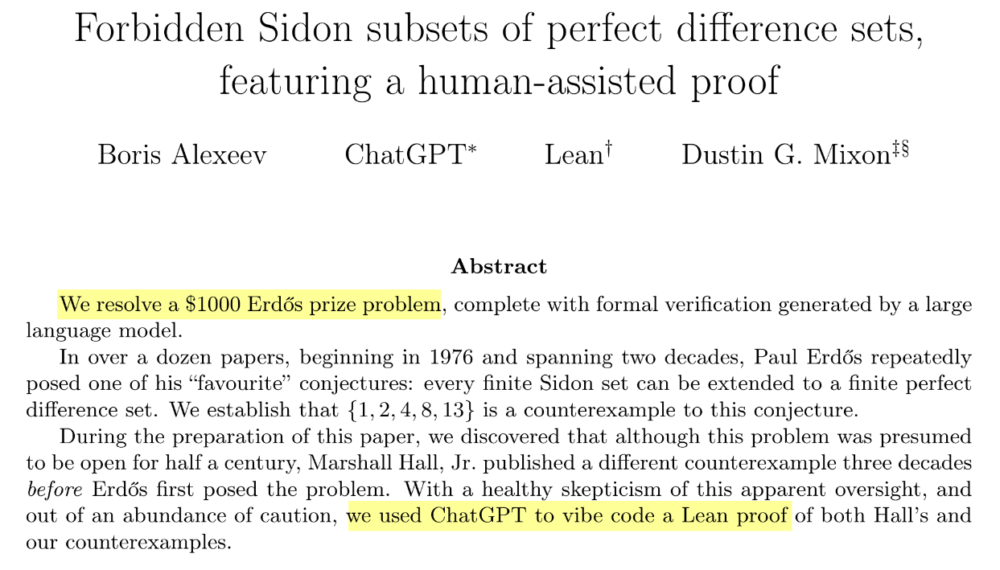
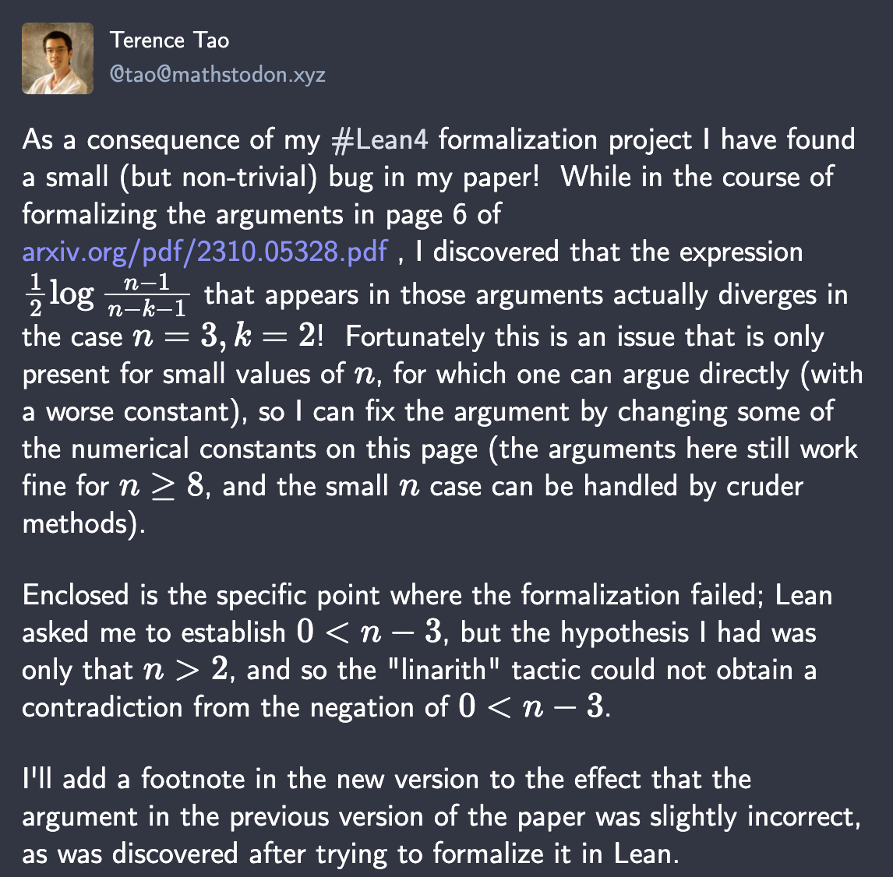
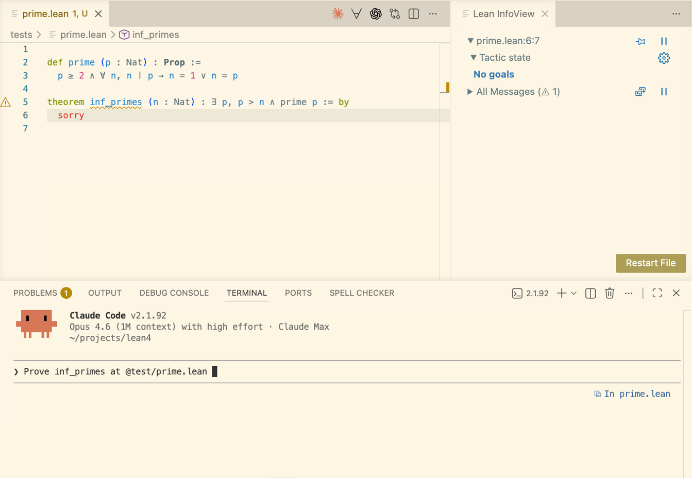
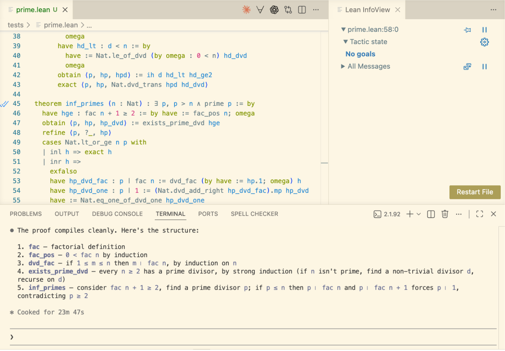
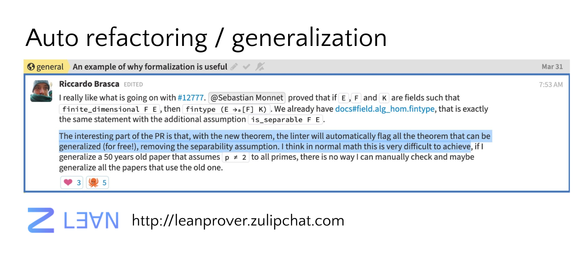
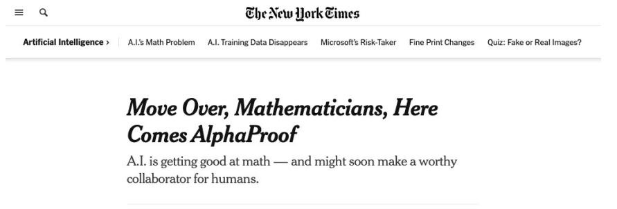

Lean: Machine-Checked Mathematics
"Vibe Proving"
Alexeev & Mixon resolve a $1000 Erdős prize problem.
ChatGPT generates the Lean proof. Lean verifies it.
"We used ChatGPT to vibe code a Lean proof."
Without the verifier, "an AI said so" is not mathematics. The proof is machine-checked.

What is Lean?
-
A programming language and a proof assistant
-
Same language for definitions and proofs. No translation layer.
-
Small trusted kernel. Proofs can be exported and independently checked.
-
Lean is implemented in Lean. Very extensible.
-
The math community made Lean their own: 50,000+ lines of extensions.
Theorem Proving Is a Game
"You have written my favorite computer game" — Kevin Buzzard
The "game board": you see goals and hypotheses, then apply "moves" (tactics).
def odd (n : Nat) : Prop := ∃ k, n = 2 * k + 1
theorem square_of_odd_is_odd : odd n → odd (n * n) := by
intro ⟨k₁, e₁⟩
simp [e₁, odd]
exists 2 * k₁ * k₁ + 2 * k₁
lia
Each tactic transforms the goal until nothing remains.
The kernel checks the final proof term.
The Kernel Catches Mistakes
example : odd 3 := ⟨2, by decide⟩
You don't need to trust me or my automation. You only need to trust the small kernel.
An incorrect proof is rejected immediately.
Lean has multiple independent kernels.
You can build your own and submit it to arena.lean-lang.org.
Lean Is an IDE
I gave Claude Code a file with a definition and a theorem statement.
"Prove the theorem sum_eq at tests/sum.lean"

Real-time feedback: errors, goals, and hints as you type. The IDE is where we collaborate with AI now.
AI Proves the Theorem
Claude Code found the proof. Lean verified it. No goals remaining.
It also explains the proof strategy in natural language:
-
Base case:
simp [sum]unfoldssum 0and simplifies -
Inductive step: unfold, simplify, then rewrite using distributivity and commutativity

AI explains the proof in natural language
Interactive Walkthrough: Sum Formula
def sum (n : Nat) : Nat :=
if n = 0 then
0
else
n + sum (n-1)
theorem sum_eq : 2 * sum n = n * (n+1) := by
induction n with
| zero => simp [sum]
| succ n ih =>
unfold sum; simp
rw [Nat.mul_add, ih, ← Nat.add_mul]
rw [Nat.add_comm 2 n, Nat.mul_comm]
The code above is type-checked by Lean.
Mathlib: The Mathematical Library
-
200,000+ theorems. 750+ contributors.
-
From basic algebra to modern research mathematics.
-
Fewer than 1,000 missing definitions from coverage of modern research math.
-
The dataset every AI math system trains on.

The Liquid Tensor Experiment
In 2020, Peter Scholze posed a formalization challenge.
"I spent much of 2019 obsessed with the proof of this theorem, almost getting crazy over it. I still have some small lingering doubts." — Peter Scholze
Johan Commelin led a team that verified the proof, with only minor corrections.
They verified and simplified it without fully understanding the proof.
"The Lean Proof Assistant was really that: an assistant in navigating through the thick jungle that this proof is." — Peter Scholze

Lean Is Taking Mathematics by Storm
Six Fields Medalists engaged: Tao, Scholze, Viazovska, Gowers, Hairer, Freedman.
-
Equational Theories Project (completed) — Terence Tao
-
Carleson's Theorem (completed) — Floris van Doorn
-
Fields Medal sphere packing — AI assisted
-
Fermat's Last Theorem — Kevin Buzzard

Tao Finding a Bug in His Own Paper

Lean's linarith couldn't close a step because he only had n > 2 but needed 0 < n - 3. He added a footnote to the published paper.
Even the best mathematicians benefit from machine checking.
Tao on Refactoring
"We had formalized the proof with this constant 12, and then when this new paper came out, we said, 'Okay, let's update the 12 to 11.' And what you can do with Lean is that you just in your headline theorem change a 12 to 11. You run the compiler and... of the thousands of lines of code you have, 90% of them still work." — Terence Tao, Lex Fridman interview
Formal math is maintainable. This is new.
Reading vs Writing Formal Math
-
It is easier to read formal math than write it.
-
Formal math is easier to read than LaTeX.
-
You can click through, inspect definitions, check types.
-
AI can explain formal proofs.
-
AI is making the writing part easier.
-
Humans need to be able to read formal math.

Another AI example
I asked Claude Code: prove there are infinitely many primes.
Just the definition and the theorem statement. No Mathlib.
"Prove inf_primes at tests/prime.lean"

AI Proves Infinitude of Primes
Later: a complete proof. Every step verified by Lean.
The AI explains the proof structure in natural language.

We can replay the proof without AI.
AI Invented the Auxiliary Definitions
The AI didn't just fill in proofs.
It invented the right mathematical infrastructure:
the factorial function, and proved lemmas such as fac n > 0.
def fac : Nat → Nat
| 0 => 1
| n + 1 => (n + 1) * fac n
theorem fac_pos (n : Nat) : 0 < fac n := by
induction n with
| zero => decide
| succ n ih => unfold fac; exact Nat.mul_pos (Nat.succ_pos n) ih
The Main Theorem
Euclid's proof strategy: consider fac n + 1,
find a prime divisor p. If p ≤ n, then p divides both fac n and fac n + 1,
so p ∣ 1. Contradiction.
theorem inf_primes (n : Nat) : ∃ p, p > n ∧ prime p := by
have hge : fac n + 1 ≥ 2 := by have := fac_pos n; omega
obtain ⟨p, hp, hp_dvd⟩ := exists_prime_dvd hge
refine ⟨p, ?_, hp⟩
cases Nat.lt_or_ge n p with
| inl h => exact h
| inr h =>
exfalso
have hp_dvd_fac : p ∣ fac n :=
dvd_fac (by have := hp.1; omega) h
have hp_dvd_one : p ∣ 1 :=
(Nat.dvd_add_right hp_dvd_fac).mp hp_dvd
have := Nat.eq_one_of_dvd_one hp_dvd_one
have := hp.1
omega
AI Explains Its Reasoning
The AI provides natural language explanations alongside the formal proof.
-
Five definitions and theorems, each with clear mathematical motivation.
-
The formal proof follows Euclid's classic strategy.
-
Every step is verified by Lean — the natural language explanation helps humans follow.
Formal proofs don't have to be opaque. AI bridges the gap between machine-checked rigor and human understanding.
What We Learned from Mathematics
-
Machine-checkable proofs enable a new level of collaboration.
-
Auto refactoring and generalization for free.
-
It is not just about proving but also understanding complex objects and proofs, getting new insights, and navigating through structures beyond our cognitive abilities.

Do We Still Need Proof Automation?
"I thought AI would prove all theorems for us now."
-
Tactics are like "game moves".
-
Better tactics = shorter proofs.
-
Better tactics = more powerful AI.
-
grindis a new "game move."

What is grind?
New proof automation (since Lean v4.22), developed by Kim Morrison and me.
A proof-automation tactic inspired by modern SMT solvers. Think of it as a virtual whiteboard:
-
Discovers new equalities, inequalities, etc.
-
Writes facts on the board and merges equivalent terms
-
Multiple engines cooperate on the same workspace
Cooperating Engines:
-
Congruence closure; E-matching; Constraint propagation; Guided case analysis
-
Satellite theory solvers (linear integer arithmetic, commutative rings, linear arithmetic, AC)
Supports dependent types, type-class system, and dependent pattern matching
Produces ordinary Lean proof terms for every fact.
grind: Theory Solver Combination
Satellite solvers share information through the whiteboard.
When one solver discovers an equality, all solvers see it.
example [CommRing α] [NoNatZeroDivisors α]
(a b c : α) (f : α → Nat) :
a + b + c = 3 →
a^2 + b^2 + c^2 = 5 →
a^3 + b^3 + c^3 = 7 →
f (a^4 + b^4) + f (9 - c^4) ≠ 1 := by grind
Three solvers cooperate:
-
Ring solver derives
a^4 + b^4 = 9 - c^4 -
Congruence closure deduces
f (a^4 + b^4) = f (9 - c^4) -
Linear integer arithmetic closes
2 * f (9 - c^4) ≠ 1
grindis one of the fastest-growing tactics in the Lean ecosystem: over 4,000 occurrences in Mathlib
Tao on grind

"I have been experimenting recently with the new tactic grind in Lean, which is a powerful tool inspired by 'good old-fashioned AI' such as satisfiability modulo theories (SMT) solvers... When I apply grind to a given subgoal, it can report a success within seconds... But, importantly, when this does not work, I quickly get a grind failed message."
grind Interactive Mode
grind => exposes a domain-specific language for stepping through the solver's
execution. You can mix grind steps with ordinary tactics.
example : (cos x + sin x)^2 = 2 * cos x * sin x + 1 := by
grind =>
use [trig_identity]
ring
grind discovers that (cos x + sin x)^2 = 2 * cos x * sin x + 1 using the trig identity and ring reasoning.
Automation that is opaque is useful. Automation that is transparent and steerable is transformative, for both humans and AI.
Better Tactics = Better AI
-
When
grindcloses a goal in one step instead of fifty, the AI's search tree shrinks dramatically. -
Compact proofs = better training data = better AI provers.
-
The flywheel: better automation, compact proofs, better AI, more users, more libraries, repeat.
example {α} [CommRing α] [IsCharP α 0] [NoNatZeroDivisors α]
(d t d_inv : α)
(Δ40 : d * (d + t + d * t) = 0)
(Δ41 : d^2 * (d + d * t - 2 * d * t^2 + d * t^4 + d^2 * t^4) = 0)
: d * d_inv = 1 → t + 2 * t^2 - t^3 - 2 * t^4 + t^5 = 0 := by
grind
Quantum Algebra example from "Categories generated by a trivalent vertex", Morrison, Peters, and Snyder
Every AI System Used Lean
Every AI system that solved IMO problems with formal proofs used Lean.
-
AlphaProof (Google DeepMind) — silver medal, IMO 2024
-
Aristotle (Harmonic) — gold medal, IMO 2025
-
SEED Prover (ByteDance) — silver medal, IMO 2025
Three independent teams. No competing platform was used by any of them.

The AI Scoreboard
-
Axiom: valued at $1.5 billion. 12/12 on Putnam 2025.
-
DeepSeek Prover-V2: 88.9% on MiniF2F-test. Open-source, 671B parameters.
-
Harmonic: valued at $1.45 billion. Built the Aristotle AI.
None of these systems existed in early 2024.

Watershed Moment for AI–human Collaboration in Math
Sidharth Hariharan and collaborators describe how Viazovska's Fields Medal-winning sphere packing proofs were formally verified in Lean through a collaboration between human mathematicians and AI.
"Formal verification of a proof is like a rubber stamp. It's a kind of bona fide certification that you know your statements of reasoning are correct." — Liam Fowl, Princeton
The effort culminated in the autoformalization of the 24-dimensional sphere packing proof, over 200,000 lines of code, in just two weeks.
AI is not replacing mathematicians. It is empowering them.
Why Lean?
-
Lean is implemented in Lean. You can access Lean's internal data using Lean.
-
Mathlib is the training data. 200,000+ theorems. 2.2M+ lines.
-
Machine-checkable proofs = unfakeable evaluation metric.
-
Open source. No vendor lock-in.
-
Six Fields Medalists. 750+ contributors.
The Feedback Loop
-
Better automation → compact proofs → better AI → more users → more libraries → repeat
-
AI replaces the heuristics. The algorithmic core (congruence closure, linear arithmetic, decision procedures) is more valuable than ever.
-
grindis designed this way: strong algorithms, AI-replaceable search.
AI will not make formal methods obsolete. Decision procedures are free, predictable, correct. AI shines at high-level reasoning. They are complementary.
AI Changed How I Work
AI is not just changing who uses Lean. It changed how I work.
Kim Morrison (Lean FRO) showed me a major refactoring step: more than 10,000 lines changed across Mathlib, implemented by Claude Code.
Since then, AI has removed the pain of developing software.
I used to believe my superpower was that I could tolerate a lot of pain. That superpower is no longer relevant.
AI now isolates issues, tries new ideas, runs experiments, analyzes performance, and much more.
The Validation Bottleneck
"The bottleneck for using AI to create strategies and make conjectures is we have to rely on human experts and the test of time to validate whether something is plausible or not." — Terence Tao, Dwarkesh Patel interview
Lean automates the validation. That's the unlock.
AI will write proofs. AI will even draft specifications from natural language.
But reading the formal statement and saying "yes, this is what I meant" remains the human job. The formal statement is the trust anchor.
Reward Hacking in RL
"It's really important with these formal proof assistants that there are no backdoors or exploits you can use to somehow get your certified proof without actually proving it, because reinforcement learning is just so good at finding these backdoors." — Terence Tao
The kernel's soundness is AI safety infrastructure.
Who Watches the Provers? | Comparator | Validating a Lean Proof
Verso: Written in Lean. Checked by Lean.
-
Future math papers will have Lean code that is checked.
-
Lecture notes, papers, and slides — all in one tool.
-
These slides are written in Verso.
-
lean-lang.org is written in Verso.
-
leodemoura.github.io is written in Verso.

The Lean FRO
Nonprofit. 20 engineers. Open source. Controlled by no single company.
Sebastian Ullrich and I launched it in August 2023.
28 releases and 8,000+ pull requests merged since its launch.
"Lean is not a research project anymore. We run the Lean FRO as a startup."
ACM SIGPLAN Award 2025: "Lean has become the de facto choice for AI-based systems of mathematical reasoning."
Conclusion
We opened this talk with something unexpected: ChatGPT proving theorems in Lean. AI generating formal proofs. The Erdős prize resolved with "vibe proving."
Formalization isn't just about proving. It's about understanding, collaborating, and building trust at a scale beyond our cognitive abilities.
"It's quite possible at the high school level... that you could get involved in a math project and actually make a real contribution because of all these AI tools, Lean, and everything else." — Terence Tao, Dwarkesh Patel interview
The entire discipline thrives when no one has to "take it on faith."
The vocabulary of mathematics is changing.
lean-lang.org | live.lean-lang.org | Lean Zulip | Reference Manual